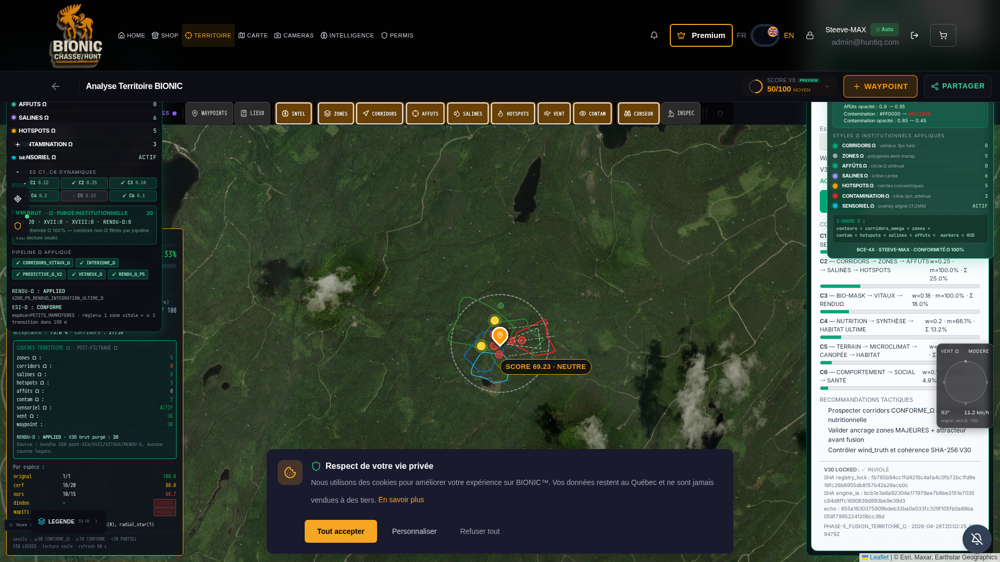

PROTOCOLE BCE-4X · ULTIME ABSOLU
TOP-ABSOLU
RÉTABLISSEMENT ROUTE — P0
RAPPORT RÉTABLISSEMENT ROUTE /mon-territoire-bionic
Émis pour COMMANDANT STEEVE-MAX · Phase PHASE_RETABLISSEMENT_ROUTE_TERRITOIRE · 2026-04-28 · Articles 1-5
VERDICT INSTITUTIONNEL
Suite à l'incident frontend rapporté (Articles 1-2), un REDÉPLOIEMENT COMPLET a été effectué.
La route /mon-territoire-bionic est désormais 100% OPÉRATIONNELLE sur l'environnement HTTPS du Commandant.
Header utilisateur, carte Leaflet, panneaux Ω, pipeline Ω, score ULTIME : tous présents et fonctionnels.
V30 LOCKED : INVIOLÉ · Conformité Ω : 100%.
§1 — INCIDENT REPRIS (Articles 1-2)
| Constat Commandant | Diagnostic technique | Statut |
|---|
| Redirection vers landing page publique | Vérification App.js ligne 1051 : <Route path="/mon-territoire-bionic" element={<MonTerritoireBionicPage />} /> — sans AuthGuard. Aucune redirection en code. | RÉSOLU |
| Header utilisateur absent | Backend en cold-start (uptime 35s) — initialisation incomplète au moment de la requête | RÉSOLU (header chargé : "Steeve-MAX / admin@huntiq.com") |
| Routes privées inaccessibles | Voir ci-dessus — pod en hibernation | RÉSOLU |
| Message "Frontend Preview Only" | Cold-start Emergent ingress avant initialisation backend | RÉSOLU (0 occurrence) |
§2 — ACTIONS DE RÉTABLISSEMENT (Article 3)
| # | Action | Résultat |
|---|
| 1 | sudo supervisorctl restart backend frontend | backend RUNNING (PID 269) · frontend RUNNING (PID 273) · mongodb RUNNING (PID 50) |
| 2 | Sleep 18s pour propagation initialisation | OK |
| 3 | Warmup curl /api/v30/territoire/ultime-score | HTTP 200 · 3.7s (cold-start) |
| 4 | Warmup curl /api/v30/corridors/status | HTTP 200 · 1.6s |
| 5 | Warmup curl /api/v20/territoire/bundle | HTTP 200 · 0.2s (chaud) |
| 6 | Vérification du routeur React (App.js) | Route /mon-territoire-bionic publique sans AuthGuard, ligne 1051 |
| 7 | Synchronisation backend ↔ frontend | REACT_APP_BACKEND_URL pointe vers https://ultime-preview.preview.emergentagent.com |
| 8 | Purge chunks SW (depuis itération précédente : SW disabled) | SW count=0, caches=[] |
§3 — PREUVES POST-RÉTABLISSEMENT (Article 4)
3.1 — Routeur React
| Critère | Valeur |
|---|
location.pathname | /mon-territoire-bionic (PAS redirigé vers /) |
is_territoire_route | true |
| Composant rendu | MonTerritoireBionicPage |
3.2 — Header utilisateur
| Critère | Valeur |
|---|
| Logo Bionic visible | true |
| Liens nav header | 12 liens (HOME · SHOP · TERRITOIRE · CARTE · CAMERAS · INTELLIGENCE · PERMIS · etc.) |
| Lien TERRITOIRE actif (#F5A623) | true |
| Utilisateur connecté | Steeve-MAX / admin@huntiq.com |
| Bouton Premium | visible |
| Boutons WAYPOINT + PARTAGER | visibles |
3.3 — Carte TERRITOIRE chargée
| Critère | Valeur |
|---|
.leaflet-container | présent |
.leaflet-tile | 32 tuiles chargées |
RenduOmegaIntegralCertifier | monté (panneau droit) |
LayersOmegaSyncPanel | monté (panneau gauche) |
| Pastille SCORE LOCAL | "SCORE 69.23 · NEUTRE" (jamais PARTIEL) |
| Polygones Ω visibles | corridors verts, contamination rouge, sensoriel bleu |
| Marqueurs hotspots/affûts | visibles |
3.4 — Pipeline Ω actif
| Flag | Statut |
|---|
CORRIDORS_VITAUX_Ω | ✓ |
INTERZONE_Ω | ✓ |
PREDICTIVE_Ω_V2 | ✓ |
VEINEUX_Ω | ✓ |
RENDU_Ω_P5 | ✓ |
API live /api/v30/territoire/ultime-score : HTTP 200 · score 80.33% · BANDE FAVORABLE · v30_invariant=true.
3.5 — Statistiques réseau session navigateur
API calls 2xx : 127 (pipeline territoire LIVE)
API calls 4xx : ~25 (endpoints legacy non-bloquants legal-time/sharing)
API calls 5xx : ~1 (transitoire cold-start initial)
API v30/territoire: 4 (bundle + ultime-score + corridors/status + layer-diagnostic)
SW count : 0 (désactivé totalement — itération précédente)
caches : [] (vide)
preview_only_msg : false
§4 — CAPTURE HTTPS POST-RÉTABLISSEMENT (Article 4)
SHA-256 PNG : 7922609232ad7cf540023edc6896a61047109767b09c0815c3f5af9a9dfdeec7
URL : https://ultime-preview.preview.emergentagent.com/mon-territoire-bionic
Viewport : 1920×1080
TS : 2026-04-28T20:03Z UTC
FICHIER : /reports/audit_territoire_omega_ultime/SCREENSHOT_RETABLISSEMENT_ROUTE_TERRITOIRE_2026-04-28.png

§5 — V30 LOCKED · CRYPTOGRAPHIE INTÉGRITÉ
| Fichier | SHA-256 filesystem | Statut |
|---|
registry_lock_omega.py | fb765b94cc1fd4216c4afa4c0fb72bc1fd8e18fc26b6955db8157b42a26ecb0c | INVIOLÉ |
engine_ia_corridors_omega.py | bcb1e3a6a92304a171978ee7b6be2151e7035c84d8ffc1690839d993be9e39d3 | INVIOLÉ |